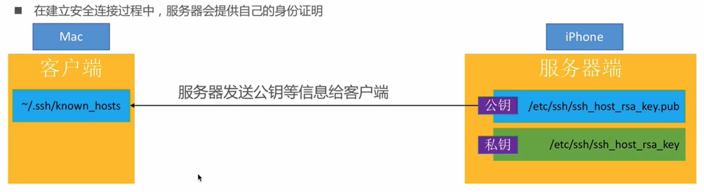
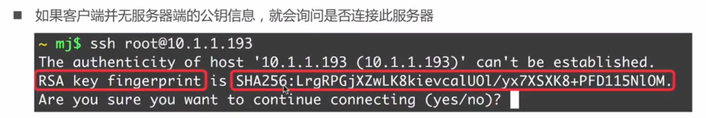
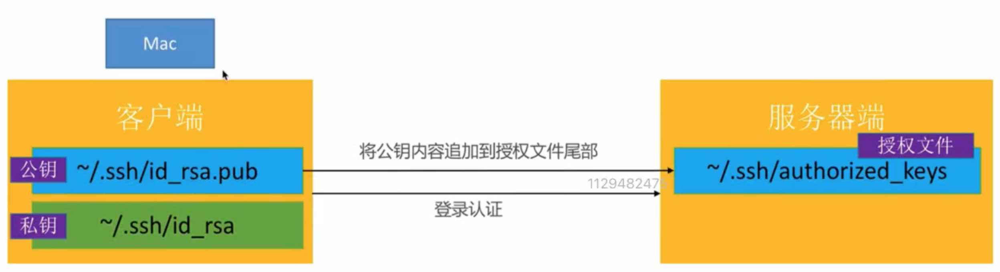

SSH远程访问越狱设备
前置条件：
已越狱
已安装OpenSSH
一、SSH简介
SSH 是 Secure Shell 的缩写，由 IETF 的网络小组（Network Working Group）所制定；SSH 为建立在应用层基础上的安全协议。SSH 是目前广泛采用的安全登录协议，专为远程登录会话和其他网络服务提供安全性的协议，替代以前不安全的Telnet协议。利用 SSH 协议可以有效防止远程管理过程中的信息泄露问题。
SSH包括二个部分，服务端的SSHD（Secure Shell Daemon）和SSH客户端。我们通常所说的用SSH登录到某某主机，指的是用SSH客户端远程登录到某台主机（该主机运行了SSHD服务端程序）。
SCP和SFTP都是SSH软件包的组成部分。
SCP是Secure Copy的简称，是用来与远程主机之间进行数据传输的协议，相当于经过加密的Copy命令。SCP数据传输使用 ssh协议，并且和ssh 使用相同的认证方式，提供相同的安全保证 。
SFTP=SSH File Transfer Protocol ，有时也被称作 Secure File Transfer Protocol 。SFTP是用SSH封装过的FTP协议，相当于经过加密的FTP协议，功能与FTP一样，只是传输数据经过加密。
SFTP支持断点续传，SCP则不支持。
总结：SSH其实是专门为shell设计的一种通信协议，它垮了两个网络层（传输层和应用层）。通俗点讲就是只有SSH客户端，和SSH服务器端之间的通信才能使用这个协议，其他软件服务无法使用它。
OpenSSH是SSL的开源实现
通信端口：22
1.1 SSL
SSL(Secure Sockets Layer 安全套接字协议),及其继任者传输层安全（Transport Layer Security，TLS）是为网络通信提供安全及数据完整性的一种安全协议。TLS与SSL在传输层与应用层之间对网络连接进行加密。
Https = Http + SSL/TLS
可支持更多协议，支持安全传输
OpenSSL是SSL的开源实现
二、SSH配置文件
2.1 配置文件
客户端配置文件：/etc/ssh/ssh_config
服务端配置文件：/etc/ssh/sshd_config
客户端公钥文件：~/.ssh/id_rsa.pub
客户端私钥文件：~/.ssh/id_rsa
服务端公钥文件：/etc/ssh/ssh_host_ras_key.pub
服务端私钥文件：/etc/ssh/ssh_host_rsa_key
2.2 known_hosts
客户端文件~/.ssh/known_hosts中保存了登录过的，远程服务器中的公钥
10.94.51.82 ssh-rsa AAAAB3NzaC1yc2EAAAADAQABAAABgQCy4yU9Yt2bKmJ4vjuYlorL8j56EXEi6p17Zw+h0+Ymgt6IjFPCfoWr/RBnwGtb/gGCOVM3UUyTbzeXysr4rSxxxxxxxxVP27Oyo8BzXJI+pcZ2px8DWujTjab7Zi7Lq8w28inndBN7RszF+0bNf+/q/v1XfXE9cZk33bGn1oxybHQXSF3OqQQpP+GwtDJVLZTJfINc9jOAS1i35xEvMwvrfAei6NiMpLmka0=
2.3 authorized_keys
服务端文件~/.ssh/authorized_keys文件中，存储了客户端的公钥
$ cat authorized_keys
ssh-rsa AAAAB3NzaC1yc2EAAAADxxxxxxxxxxxxQKveQBbrR5TMqqKCK+huaekNhK14wGhZ7rt6Rr8FFWUYSQsS0jua/Ukm/Mmo9Mn test@test.net
2.4 SSH流程
1）建立安全连接，服务端提供公钥信息

2）收到服务端提供的信息，客户端首次会进行询问

3）客户端验证
- 账号密码验证
- 秘钥验证
- 客户端生成一对秘钥对，将公钥追加到服务端的
authorized_keys中
- 客户端生成一对秘钥对，将公钥追加到服务端的

SSH相关命令
生成秘钥对
$ ssh-keygen -t rsa -C "your_email@example.com" -f fileName
# -t 指定密钥类型，默认是 rsa ，可以省略。
# -C 设置注释文字，比如邮箱。
# -f 指定密钥文件存储文件名，默认id_rsa，可以省略。
删除旧的公钥
ssh-keygen -R 10.xx.xx.10
将公钥追加到服务端的authorized_keys中
$ ssh-copy-id -i .ssh/id_rsa.pub serverName@192.168.x.xxx
# -i 指定公钥名称，可省略，默认使用id_rsa.pub
如果配置了秘钥还需要输入密码，则需要在服务端设置文件权限
chmod 755 ~
chmod 755 ~/.ssh
chmod 644 ~/.ssh/authorized_keys
SCP相关命令
scp [参数] [原路径] [目标路径]
常用参数 -r : 复制文件夹
1）复制文件
# 拷贝本地文件到服务端
scp dumpdecrypted.dylib root@12.34.51.82:/usr/lib
# 拷贝服务端文件到本地
scp root@12.34.56.122:/root/Downloads/compass.tar ./path
2）复制文件夹
# 拷贝本地文件夹到服务端
scp -r ./path root@12.34.56.122:/root/Downloads
# 拷贝服务端文件夹到本地
scp -r root@12.34.56.122:/root/Downloads ./path